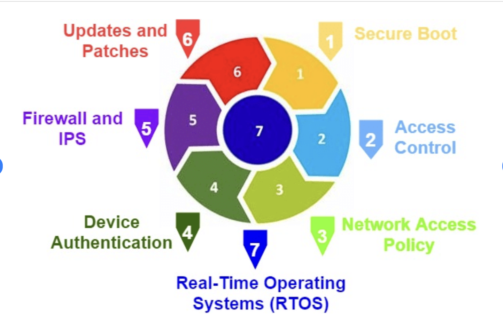

Turvalisust hakkatakse juba disainifaasist ehitama ja integreerima koos hea riskihaldusega.
Väga suur panus turvalisusele, mis aitab välistada hilisemaid turvaprobleeme. Anna süsteemi komponentidele ja kasutajatele ainult nii palju õigusi, kui neil on oma ülesannete täitmiseks vaja, mis vähendab turvaprobleeme.
Nõuab väga heal tasemel turvaoskusi. Võib minna väga ajamahukaks ja kulukaks.
Cairis:CAIRIS on avatud lähtekoodiga tarkvaratööriist, mis aitab luua turvaliselt projekteeritud süsteeme. See integreerib turvalisuse, kasutatavuse ja riskianalüüsi ühte platvormi, keskendudes eriti süsteemi projekteerimise ja ohuanalüüsi varajastele etappidele.
